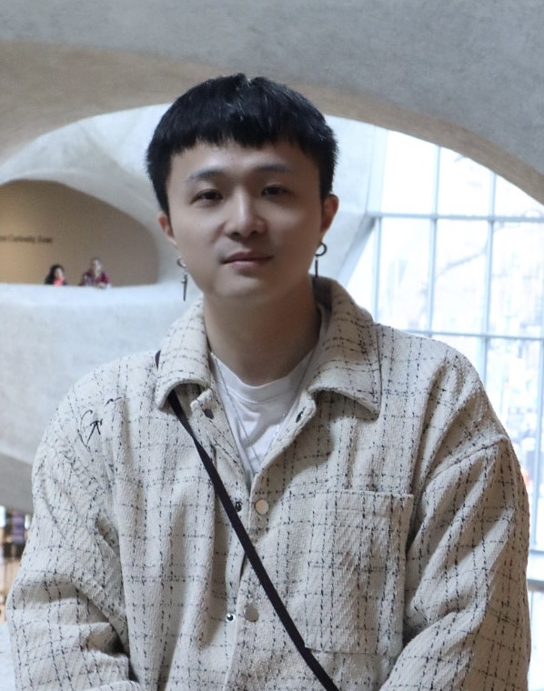
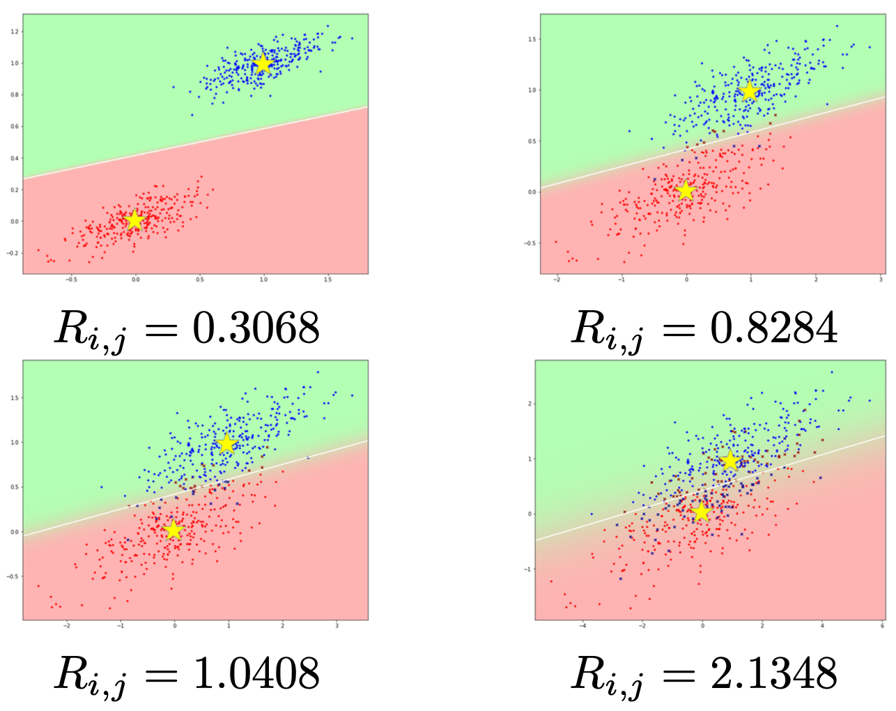
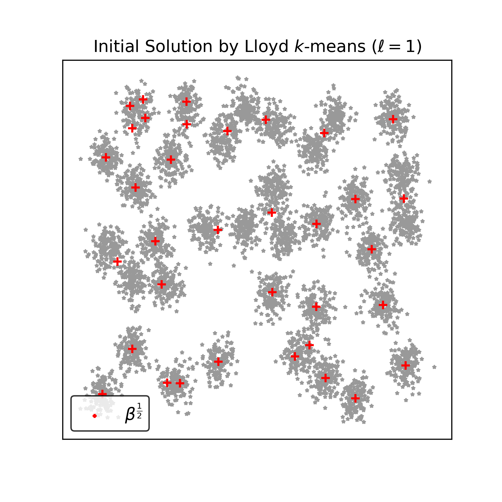

|
Jiazhen Hong Department of Electrical and Computer Engineering at Rutgers University in Piscataway, NJ. I am a third-year Ph.D. candidate working at the Integrated Systems & NeuroImaging Laboratory, advised by Professor Laleh Najafizadeh. My primary research interests include machine learning algorithms, electroencephalography (EEG)-based brain-computer interfaces (BCIs), signal processing, and natural language processing (NLP). |
 |
{kind=link}
🔥 News
|
ResearchAt Rutgers University, I have gained significant experience in developing robust machine learning models and processing complex biological data, particularly through projects involving EEG signal analysis and motor imagery tasks for BCIs. Since July 2023, I have been working on an NLP-based BCI mind control speller system designed to assist individuals with disabilities in communication. Additionally, from May 2021 to May 2023, I focused on developing a channel selection method for BCIs, which is crucial for enhancing the speed and efficiency of BCIs in applications. My project in 2020 aimed at optimizing the k-means algorithm using a geometric approach to address issues associated with local minima, validating this approach with real-world image segmentation dataset bioinformatics datasets. Before joining Rutgers University, I engaged in biostatistics research at Harvard Medical School, focusing on the diagnosis of pancreatic cancer. The project aimed to accurately diagnose pancreatic cancer using Gene Set Enrichment Analysis (GSEA) to identify significant differences between biological states based solely on protein data, including subsets of 1300 proteins or small gene panels such as 5 or 10 genes. |
|


|
A deep learning framework based on dynamic channel selection for early classification of left and right hand motor imagery tasks
Jiazhen Hong, Foroogh Shamsi, Laleh Najafizadeh , EMBC, 2022 IEEE / Rutgers Research Day / Rutgers Brain Health Institute Symposium We introduce a deep learning framework that utilizes dynamic channel selection for early classification of left versus right hand motor imagery (MI) tasks. This approach reduces data dimensionality, thereby accelerating future related brain-computer interface (BCI) technologies. |
|

|
A Geometric Approach to k-means
Jiazhen Hong, Wei Qian, Yudong Chen , Yuqian Zhang , arXiv, 2022 arXiv / We propose a flexible framework for k-means problem by harnessing the geometric structure of local solutions. It provides a theoretical foundation for future work to design detection routines for varying cluster distributions. |
📄 Publications |
Accepted
Under Review
In Preparation
|